Riassunto della build, del kit e dei team di Mitya a Costellazione 0, basato sullo showcase
“C0 Mitya is UNEXPECTED! Genshin Impact 7.2” di IWinToLose Gaming.
Mitya è un personaggio Stellar-Conduct a doppio ruolo: può fare da Main DPS oppure da Sub-DPS/Support off-field.
RuoloMain DPS / Sub-DPS
ScalingMaestria Elementale
Testato aC0 · talenti 10/10/10
DifficoltàSupport facile, DPS alta
1. Build
Statistiche, armi e artefatti
Statistiche di base
Mitya parte con 100 di Maestria Elementale di base, oltre al CRIT DMG da ascensione: un bel pacchetto di statistiche “gratis”.
Scala quasi solo sulla Maestria Elementale: molti buffer basati su ATK non funzionano con lui.
Statistiche da cercare: Maestria Elementale, CRIT Rate e CRIT DMG.
Il suo bonus allo Stellar-Conduct arriva al massimo (+14%) già con 500 di Maestria, facile da raggiungere.
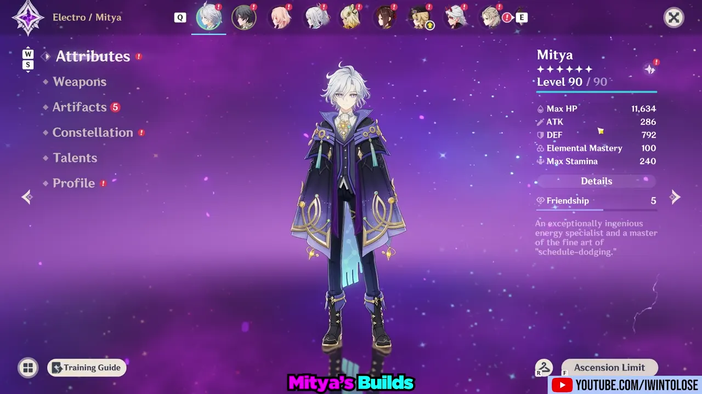
Senza artefatti Mitya ha già 100 di Maestria Elementale.
Armi (catalizzatori)
Confronto del creator a parità di rotazione (con un po’ di variabilità dovuta agli stack e ai colpi):
Starsealed Edict (signature)+35,1%
Winter’s Heavy Heart R5+21,6%
Winter’s Heavy Heart R1+4,4%
Sacrificial Fragments (F2P)base
Blackmarrow Lantern (F2P)≈ Sacrificial
La Blackmarrow Lantern rende come le Sacrificial Fragments: le Sacrificial danno solo la possibilità di riusare la skill un po’ prima. Nel ruolo di supporto si può usare anche Thrilling Tales of Dragon Slayers.
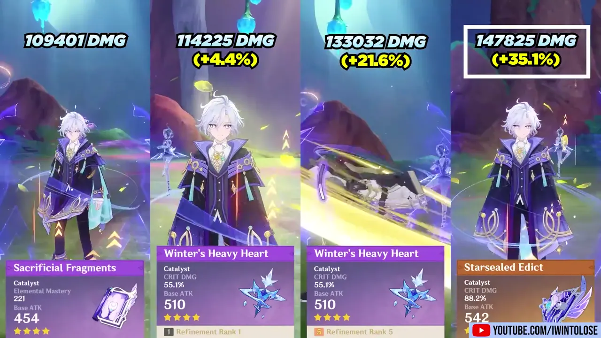
Starsealed Edict: circa +35% di danno rispetto alle Sacrificial Fragments.
Artefatti
2pz Flower of Paradise Lost + 2pz Night of the Sky’s Unveiling (+80 e +80 Maestria): la scelta usata più spesso.
4pz Disenchantment in Deep Shadow: alternativa ugualmente valida (+40% danni Stellar-Conduct e +16% CRIT Rate contro nemici colpiti).
4pz Tenacity of the Millelith o 4pz Heart of the Furnace: opzioni di supporto viste in alcuni showcase.
Stat principali: Maestria Elementale su sabbie e calice, CRIT sul diadema.
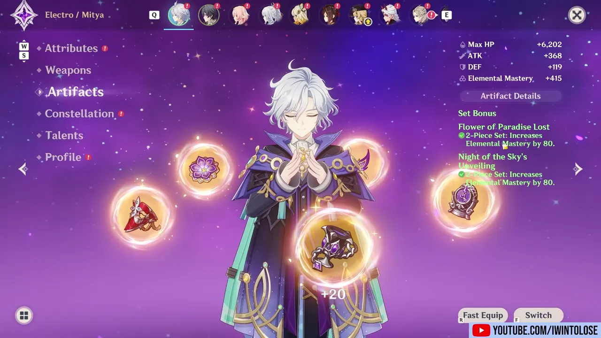
2+2 a Maestria Elementale: +415 Maestria dagli artefatti.
2. Kit
Da semplicissimo a molto tecnico
Attacchi base: normali da catalizzatore con applicazione Electro (ICD standard: 3 colpi / 2,5 s). L’attacco caricato normale è scarso, ma diventa la sua arma principale in modalità DPS.
Skill: Principle: Variable Detection
La skill crea un Detection Core e ha due versioni:
Cooldown 18 s, durata 25 s, genera 5 particelle.
Nei primi 6 s puoi passare da tap a hold (e viceversa) premendo di nuovo E.
Fuori combattimento lo Steady State distrugge le rocce: comodo per farmare minerali.
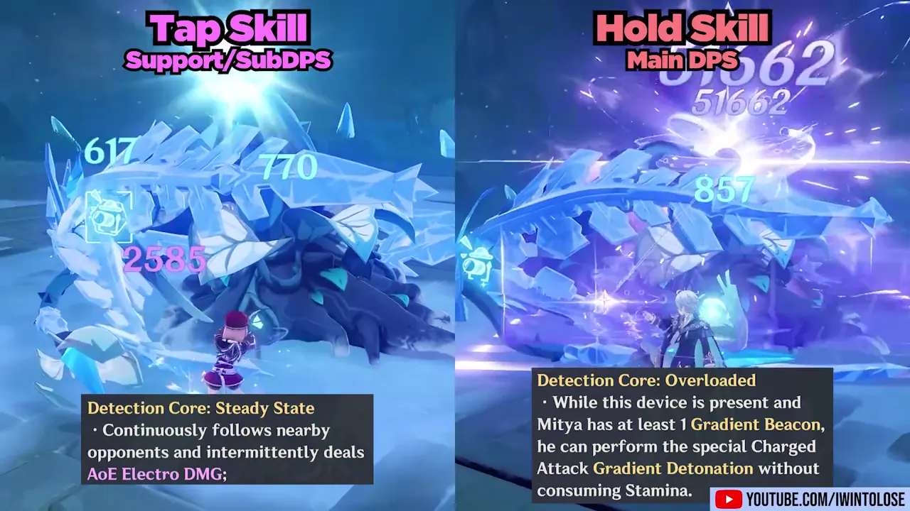
Tap = Steady State (supporto) · Hold = Overloaded (Main DPS).
Tap E · Sub-DPS / Support
Il core colpisce ogni 1,5 s e applica Electro un colpo sì e uno no.
Ogni Gradient Beacon attivo dà +30 Maestria a tutto il team (fino a +120 con 4 Beacon).
Con 4 Beacon, ogni colpo del core infligge danni Stellar-Conduct basati sulla sua Maestria.
Alla scadenza (o recast) il core esplode in base ai Beacon accumulati e li consuma.
Servono circa 6 s dal primo Stellar-Conduct per arrivare a 4 Beacon.
Hold E · Main DPS
Il core passa in modalità Overloaded.
Con Stellar-Conduct attivo e almeno 1 Beacon, l’attacco caricato diventa Gradient Detonation: raffica di colpi senza consumo di stamina.
Ogni colpo consuma un Beacon e infligge danni Stellar-Conduct.
I Beacon continuano a generarsi anche con Mitya off-field.
Gradient Beacon
Massimo 4 Beacon a C0, durata 6 s (rinnovata a ogni nuova generazione).
Si generano quando il team attiva lo Stellar-Conduct: 1 ogni 1,5 s per 3 s (tap o senza skill) o per 6 s (hold).
Si generano anche mentre Mitya li sta consumando con l’attacco caricato.
4 o 5 colpi? Se un nuovo Beacon nasce nella finestra tra il 1° e il 3° colpo (circa 0,75–1 s), Mitya spara un 5° colpo; altrimenti si ferma a 4. È in parte RNG e può dipendere anche dal ping.
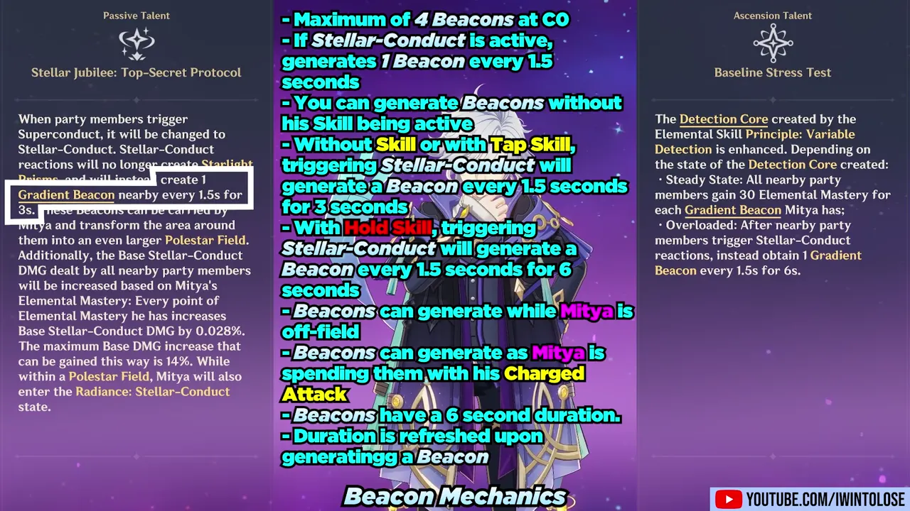
Riassunto delle regole dei Beacon.
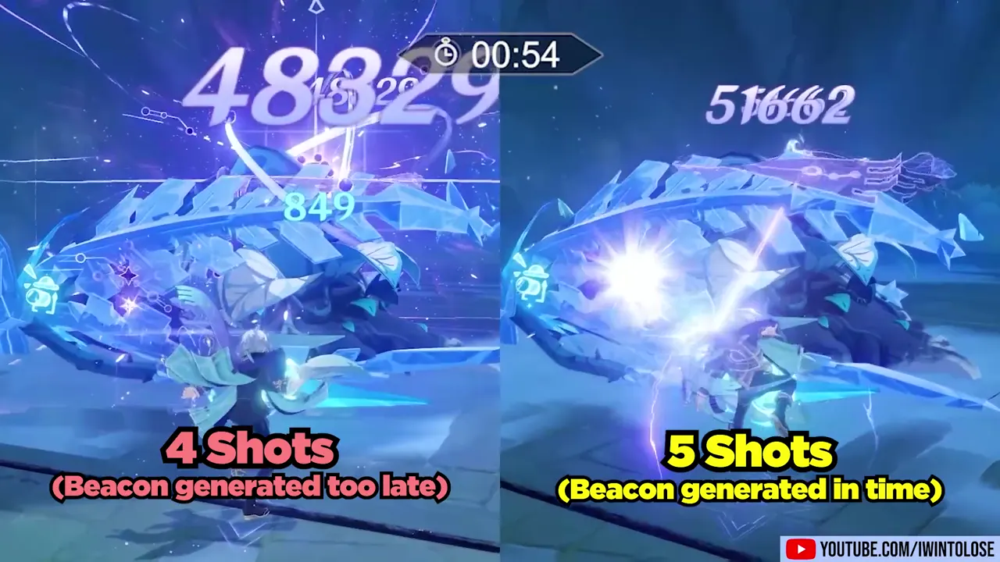
4 colpi (Beacon arrivato tardi) contro 5 colpi (Beacon in tempo).
Burst e passive
Burst (Analysis: Gradient Theory): danno Electro ad area e 3 Beacon. Poco utile da supporto (ruba tempo in campo), molto utile da DPS: più Beacon = più colpi.
Passiva CRIT: +5% CRIT Rate per ogni Beacon creato, per 15 s, fino a +20%. Dopo la prima rotazione è praticamente sempre attiva; inoltre i Beacon durano 10 s.
Passiva di team: basta averlo in squadra per abilitare lo Stellar-Conduct, che segue Mitya invece di restare fermo, e il moltiplicatore cresce fino a +14% con la sua Maestria.
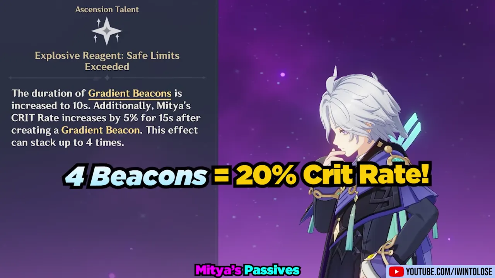
4 Beacon = +20% CRIT Rate.
3. Rotazioni Main DPS
Dove si guadagna (o si perde) il danno
Mitya DPS preferisce entrare e uscire dal campo mentre i Beacon si ricaricano. Dividere sia la sua rotazione sia quella dei compagni fa una grande differenza:
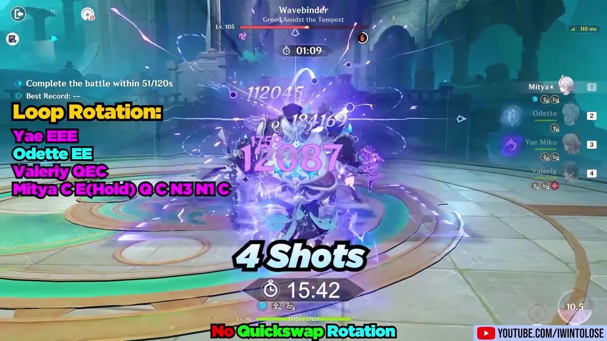
Senza quickswap: 12 colpi in ~20,8 s.
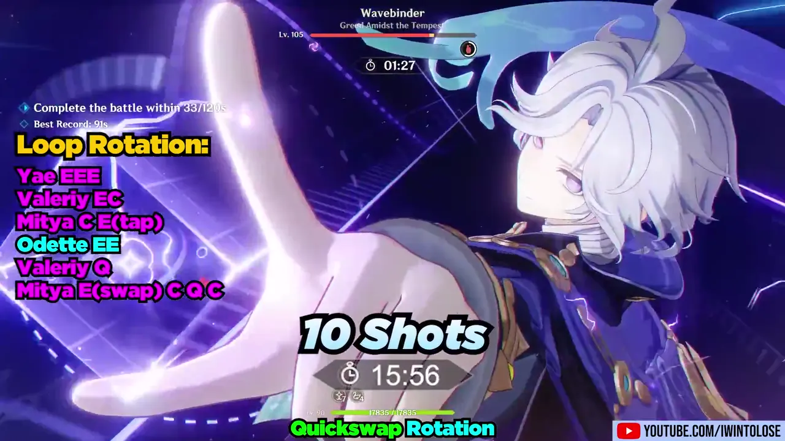
Quickswap (rotazioni divise): 15 colpi in ~19,5 s.
Loop semplice (Yae, Odette, Valeriy)
Yae EEE → Odette EE → Valeriy QEC → Mitya C, E (hold), Q, C, N3, N1, C
Loop quickswap
Yae EEE → Valeriy EC → Mitya C, E (tap) → Odette EE → Valeriy Q → Mitya E (swap), C, Q, C
È un personaggio da attacco caricato: se tieni premuto troppo presto appena entra in campo non parte nulla, se lo fai troppo tardi perdi DPS.
Un livello di ottimizzazione in più: usare a volte la tap E per accumulare stack e poi rientrare con E + attacco caricato.
Dopo aver cambiato modalità del core sembra esserci circa 1 s in cui non puoi fare swap: questo complica il dual DPS con il Viaggiatore Cryo.
Se ti piace il min-max è molto divertente; se non vuoi “sudare” sulle rotazioni, come Main DPS è difficile consigliarlo.
4. Team consigliati
Dal premium al F2P
Premium (Main DPS)
MityaOdetteYae MikoValeriy
Uno dei suoi team migliori all’uscita. Valeriy a C0 è sostituibile, ma a C6 diventa fortissimo.
F2P
MityaDionaSucroseValeriy C0
Con Blackmarrow Lantern. Il limite qui è il cooldown di oltre 20 s di Diona, non l’arma.
Sandrone + Mitya support
SandroneOdetteYae MikoMitya
“Premi E ed esci”. Team senza sustain: funziona grazie alla mobilità di Sandrone. Come buffer Mitya vale circa quanto Yae C1, ma fa meno danno personale. Rispetto ad Alyosha è un upgrade evidente, a meno che Alyosha non sia C6.
Senza Odette? C’è Mitya
CynoWriothesleyMitya
Se Odette è impegnata in un altro team, Mitya abilita lo Stellar-Conduct al suo posto. Ottimo con Cyno (le sue 5 particelle aiutano con l’energia) e con Wriothesley, che non vuole cure: nello showcase c’è Beidou al posto di un healer.
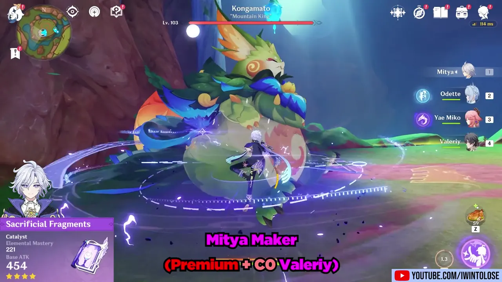
Team premium con Valeriy C0.
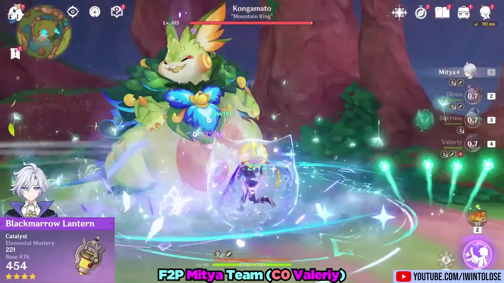
Team F2P con Blackmarrow Lantern.
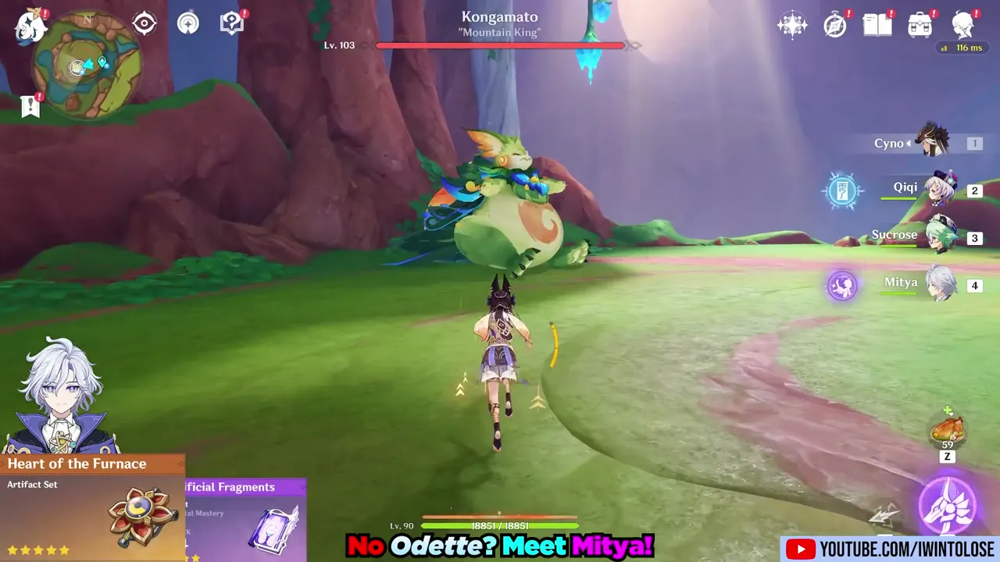
Cyno con Mitya al posto di Odette.
5. Stygian Onslaught: Wavebinder
Showcase contro il nuovo boss
Il Wavebinder (“Drunkard”) ha moltissimi HP e meccaniche RNG, ma si rompe con tanto Electro e Stellar-Conduct: Mitya e Yae lo distruggono. In media la rotazione DPS fa circa 14 colpi su 15 possibili.
Prima rotazione
Mitya hold E → Odette EE → Yae EEE → Valeriy EC → Mitya C5, N3, C3
Loop
Yae EEE → Valeriy EC → Mitya C5, tap E → Odette EE → Valeriy Q → Mitya E (swap), C5, Q, C5
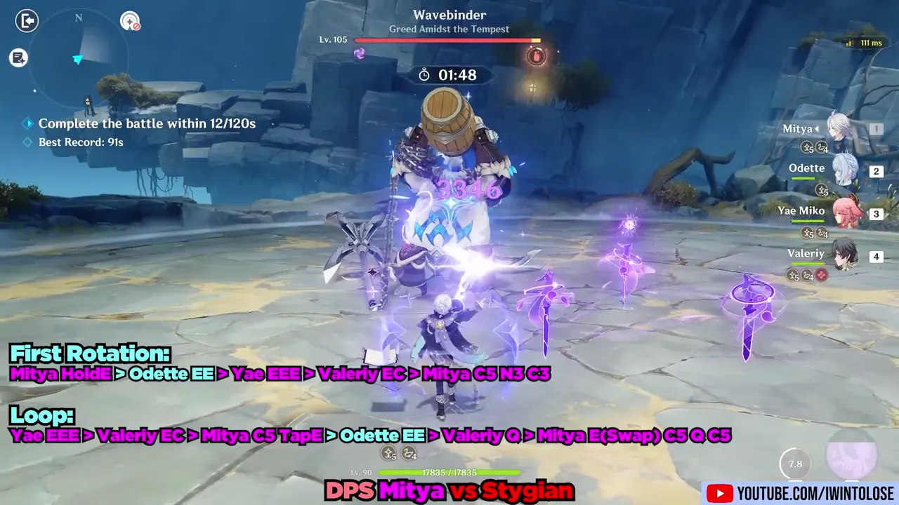
Mitya DPS con Odette, Yae e Valeriy C0, tutte armi F2P.
Personaggio 1
Personaggio 2
Personaggio 3
Personaggio 4
Tempo
Costo
C0 SandroneAtonement
C0 OdetteExaiphanes
C1 YaeWidsith
C0 MityaSacrificial
73 s
4
C1 CynoR5 Deathmatch
C0 OdetteExaiphanes
C1 YaeWidsith
C0 MityaSacrificial
80 s
4
C6 Viaggiatore (Cryo)Exaiphanes
C0 OdetteEmberwell
C1 YaeWidsith
C0 MityaSacrificial
80 s
3
C1 WriothesleyEchoes
C0 OdetteExaiphanes
C1 YaeWidsith
C0 MityaSacrificial
83 s
4
C0 Mitya (DPS)Sacrificial
C0 OdetteExaiphanes
C1 YaeWidsith
C0 ValeriyFinale
90 s
3
Tempi di clear contro il Wavebinder. “Costo” indica il costo del team secondo il creator (più alto = più investimento in 5★ limitati).
6. Conclusione: vale la pena?
Verdetto del creator
Pullalo se
Ti diverte sperimentare rotazioni e fare min-max.
Ti serve un 4° slot senza sustain per Sandrone, un’alternativa a Yae o un sostituto di Odette per Cyno e Wriothesley.
Pensi di investire nelle costellazioni: C1 e C2 sono descritte come fortissime.
Aspetta se
Lo vuoi solo come “E-bot” di supporto: secondo il creator potrebbero arrivare presto altri supporti Stellar-Conduct (Electro e Cryo).
Non ti va di gestire timing di attacchi caricati e colpi 4/5.
Il tuo team si basa su buffer di ATK: Mitya scala quasi solo sulla Maestria.